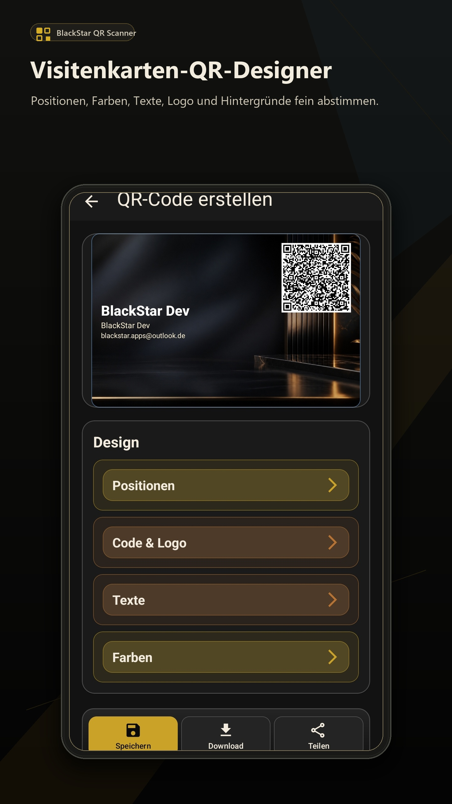
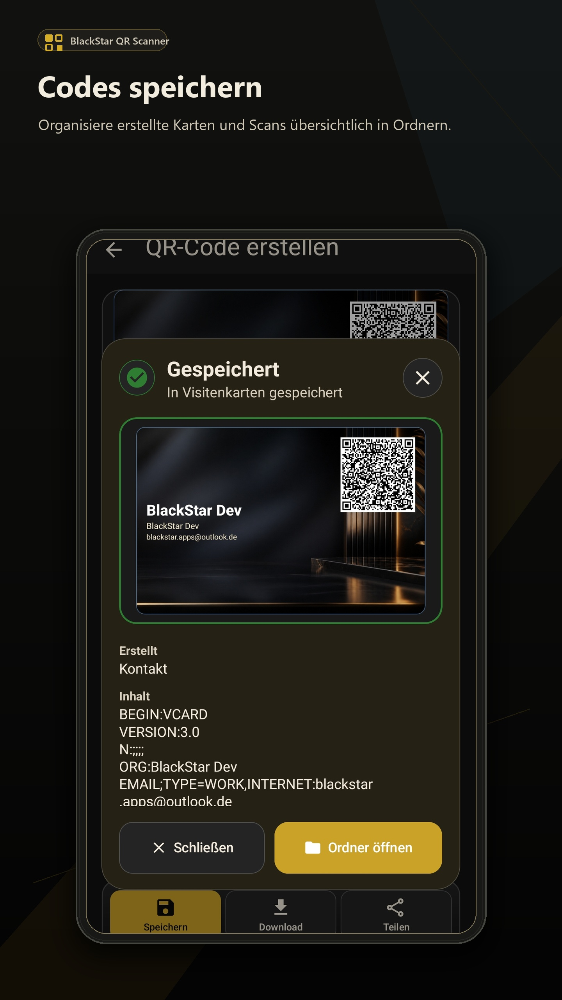
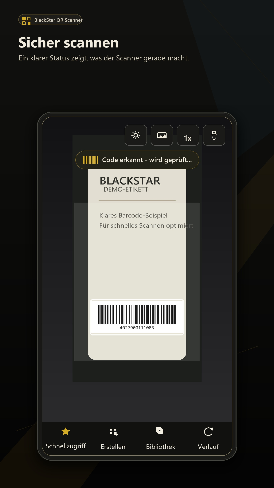
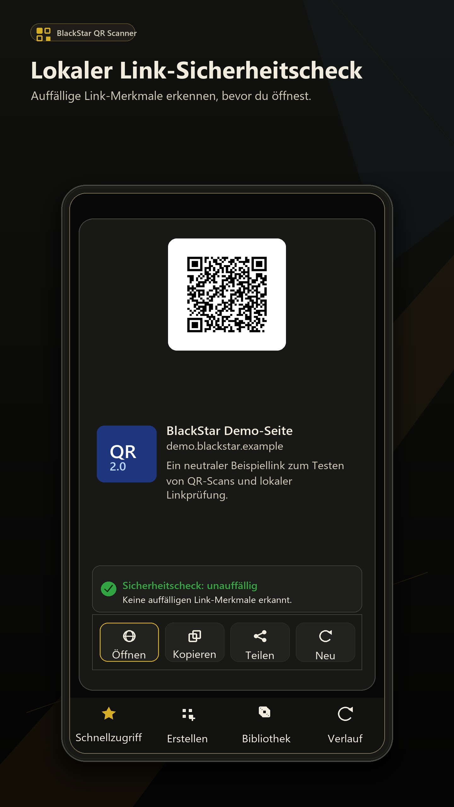
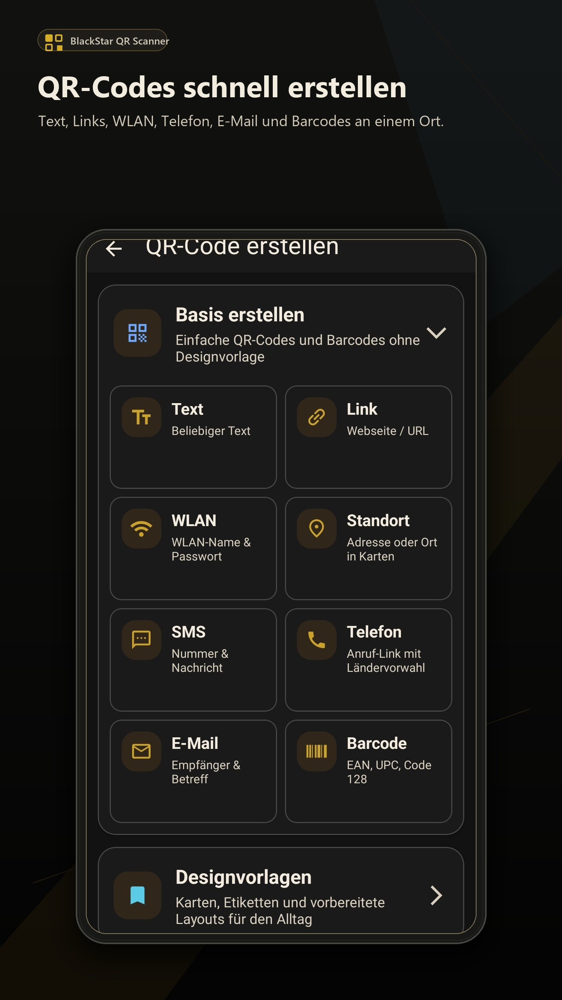
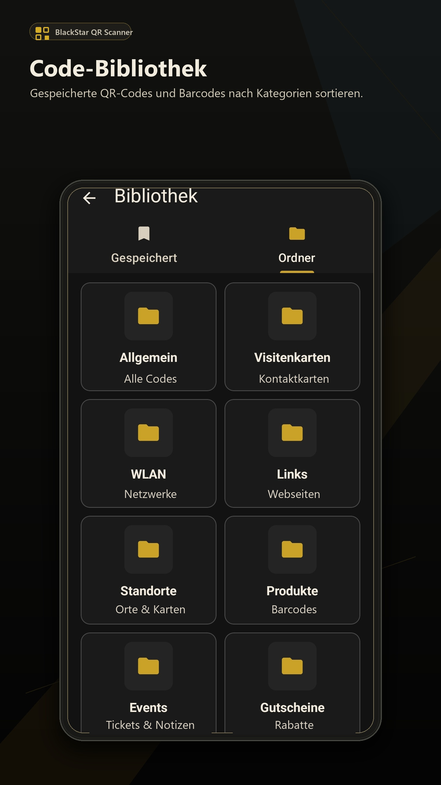

Sicher scannen
QR-Codes, Barcodes und Weblinks werden klar erkannt und verständlich dargestellt.

QR-Code Scanner und Generator
BlackStar QR Scanner erkennt QR-Codes und Barcodes, zeigt auf Wunsch Produktdetails, erstellt eigene Codes und speichert wichtige Ergebnisse übersichtlich in deiner Bibliothek.
Kostenlos nutzbar. Dezente Werbung unterstützt die Weiterentwicklung.
Version 2.0
Die App verbindet Kamera-Scan, Code-Erstellung, Bibliothek, Vorlagen und lokale Sicherheits-Hinweise in einem ruhigen Dark-Design.
QR-Codes, Barcodes und Weblinks werden klar erkannt und verständlich dargestellt.
Erstelle QR-Codes für Text, Links, WLAN, Kontakte, E-Mail, SMS und Standorte.
Speichere gescannte und erstellte Codes lokal in Ordnern und nutze sie später erneut.
Produkt-Barcodes können Details anzeigen, kopiert und über externe Produktsuche oder Preisvergleiche weiterverwendet werden.
QR-Karten und Visitenkarten
Gestalte QR-Karten mit Layouts, Farben, Schriftarten, Logo, Hintergrund und Positionen. Der QR-Code bleibt sichtbar, während Text und Design frei anpassbar sind.


Lokale Linkprüfung
Weblinks können direkt auf dem Gerät auf auffällige Merkmale geprüft werden, zum Beispiel unsichere Protokolle, verdächtige Zeichen, Kurzlink-Dienste oder sehr lange URLs. Die lokale Prüfung sendet den Link nicht an einen externen Sicherheitsdienst.
Einblicke




Android-App